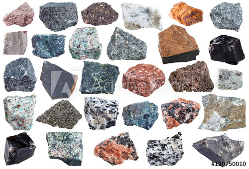
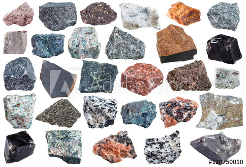

Magmatiske bergart eller størkningsbergart blir dannet ved vulkanutbrudd der det kommer flytende magma fra jordas indre, som går helt opp til jordoverflate og når smeltemassene avkjøles, størkner de og blir til fast fjell. Magmatisk bergart blir delt inn i tre hovedtyper, avhengig av hvor magmaen er størknet. Den ene er dypbergart, denne typen blir størknet under jordoverflaten. Man kan gjenkjenne magmatisk bergart ved hjelp av steinens prikkemønster. Den andre er gangbergart, og da er den størknet i sprekker (tilførselsganger) på vei opp gjennom jordskorpa, og hvis magmaen er kommet helt opp til jordoverflata, er det en dagbergart.
 
